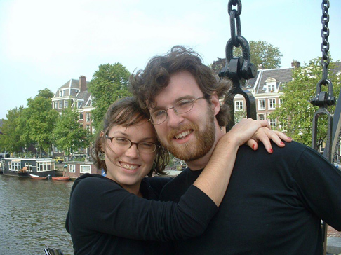

|
Howie was the third child of Howard and Catherine Cockrill, 6 and 11 years, respectively, younger
than his two older sisters. He grew up in Arkansas and attended Davidson College where he majored in
German. In 2004 he began studying entertainment law in San Francisco, CA. December 29th, 2004 saw
Howie wed Maryland native Kate Cosby on Kent Island, MD.
Thereafter they moved to California. In the spring of 2006 Howie completed his J.D. in San
Francisco. His daughters were born in 2008 and 2011.
|

|